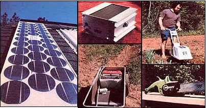
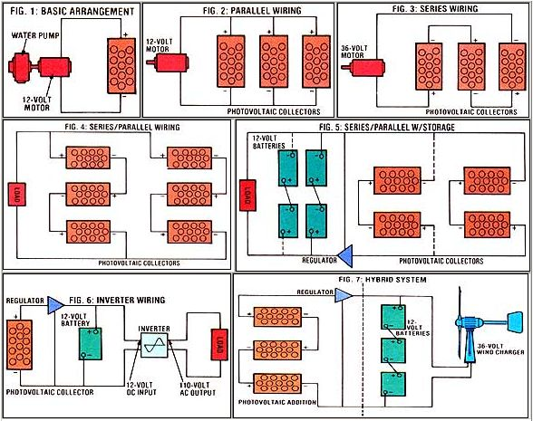

Issue # 70 - July/August 1981 PRACTICAL PHOTOVOLTAICS
You can get
You can get affordable electricity (and achieve independence) with sunbeams . . . today!
A short while ago, most North Americans thought solar energy too exotic to be put to any practical use . . . but in the past few years our worsening energy situation has changed the picture considerably. Sun power is now becoming a standard means of heating homes and domestic water . . . and its popularity is no doubt due-at least in part-to the feelings of self-sufficiency and wellbeing that an "independent" energy source can provide. In fact, harnessing the sun has become so widely accepted that a number of regional governments (California's San Diego County, for example) now require that solar features be incorporated in all new construction.
However, when someone mentions producing electricity from sunlight, most of us are probably still inclined to be skeptical . . . assuming that photovoltaic setups are better left to the latest Buck Rogers episodes. "Not so!" I say. Because, for many people, practical solar electric power is here today . . . and at affordable prices! And how, you may ask, do I know? Well, for one thing, a bank of solar cells provides all the electricity used in my family's home!
Changing sunlight (photons) into electricity (electrons)-the process called photovoltaic conversion-was pioneered by Bell Laboratories in the mid-fifties. And the silicon solar cells that Bell first devel oped for the space program are still the workhorses of the industry.
The cells are sliced from a cylinder of ultrapure silicon crystal . . . which is nothing more than ( highly ) refined sand. Every wafer is then chemically treated and processed to form a semiconductor junction (the technique is similar to that used in the fabrication of common transistors). It's within this thin semiconductor junction that electricity is generated.
And just how is the power produced? Well, photons strike the junction, liberating electrons (the action involves a mechanism that can be fully explained only by an excursion into quantum physics that I'd rather not make). The freed electrons are then collected by a conductive grid placed over the face of the cell. When a wire is connected from the front grid to the back of the cell, current flows.
Each cell generates about 1/2 volt of DC electricity, while the amount of current (amperage) depends upon the number of free electrons-which is proportional to light intensity-and the size of the cell.
Since each unit is capable of producing only about 1/2 volt, the cells must be connected in a series circuit in order to increase the voltage to a useful level. (The procedure is similar to stacking flashlight batteries.) Hence, 24 cells will, in theory, give a total output of 12 volts. In actual practice, however, each cell's output is closer to 0.46 volt, so 26 cells are required to produce a full 12 volts. And, though amperage varies from manufacturer to manufacturer (depending on the efficiency and size of the cells), a typical 12-volt panel might produce 2 amperes.
If left unprotected , silicon photovoltaic cells would be susceptible to damage from moisture and airborne contaminants. So, after they're wired together, the wafers are laid face down on a sheet of safety glass. A piece of plastic (such as Mylar) is then stretched across the back of the assembly and heat-bonded. Last of all, the 3/8"-thick panel is crimped into a metal frame. . . both to protect the glass and to help conduct heat away from the cells. A perfect seal is then insured by applying a liberal bead of silicone sealant along the joined edges.
With the background information pretty much taken care of, let's examine a couple of the practical aspects of solar electricity: the size and type of setup you might consider installing. And, since most folks will allow cost to determine just how far they go in developing a photovoltaic system, let's start by talking dollars and cents.
Currently, the market prices for panels vary from $10 to $20 per watt of capacity .. . that is, a 30-watt panel would cost between $300 and $600. But remember . . . that's for prime, first-quality collectors.
There are ways, fortunately, to purchase panels for less money. One possibility is to buy surplus equipment. Because the photovoltaic industry is expanding so rapidly, today's top seller may be replaced by an improved version at any time, and the obsolete units often sell for less than $10 per watt. Look for existing photovoltaic systems that are being updated-the Department of Energy has a few scattered throughout the country-or check directly with manufacturers to find out whether they have any unsold obsolete panels in stock.
"Manufacturer's seconds" (any panels whose performance isn't up to one or more of the maker's specifications) can also be bought at reduced prices. The most frequently found defect in such units is the production of a lower current output than was expected . . . although in rare cases a defective cell may reduce panel voltage, too. You might even be able-if you can do business with a vendor who has a government contract-to acquire panels that have been rejected merely for cosmetic reasons (such as discoloring or blemishes), which in no way affect the performance of the units!
If you shop prudently, you can probably find imperfect collectors for as little as $5.00 per watt. And, if you are able and qualified to inspect them before you lay your money down (or know someone else who is), seconds may prove to be the best way to start a home photovoltaic setup. But be forewarned . . . the increased interest in solar electricity is rapidly drying up the surplus-and-seconds market. Therefore, bargains are getting harder and harder to come by . . . and you'll have to do your homework.
There is, however, still one more way to save on the cost of solar cells: quantity buying. Because manufacturing expense drops dramatically with increased production, companies are usually willing to give a significant discount on large orders. As a matter of fact, as much as 50% can be lopped off the sticker price when groups of homeowners buy cooperatively.
But, you may want to know, why would someone opt to use solar electricity in the first place? Even at $10 per watt, a photovoltaic system can hardly compete with readily available utility power. (Of course, folks who are facing steep installation charges for long service entrance wires may find that solar cells are already a bargain.) But consider for a moment: Oil prices have been rising and will certainly continue to do so . . . and over two-thirds of the electrical generation capacity in the United States is petroleum fueled. Photovoltaic cells, on the other hand-while subject to short-term price fluctuations-are generally becoming less expensive. Many experts think that the costs associated with the two systems will be equal before the turn of the century . .. some even believe that the prices will balance out within five years.
My point is that today is a good time to begin building the groundwork for your home photovoltaic system . .. by setting up a small powerplant that can be expanded as panels become less expensive.
A basic solar-electric system consists of nothing more than a photovoltaic collector and a load. Such arrangements are commonly employed to pump water in remote areas. By referring to Fig. 1, you'll notice that the wires from the solar panel connect directly to the motor. When sunlight strikes the collector, it generates electricity . . . which in turn powers the pump. Now to get acceptable performance and reliability out of such a setup, it's important to be sure that the pump motor is compatible with the panel's output. The voltage must be the same, and the collector must be capable of supplying enough current to match the pump's rated capacity. However, in order to make such comparisons, you'll have to know just how the demand and the output are related.
Photovoltaic panels are, for technical purposes, rated in volt/amps rather than watts. One volt at 1 amp equals 1 volt/amp . . . consequently, 12 volts at 1 amp will work out to 12 volt/amps. Of course, the motor used in a pumping system may be rated in watts, but it should also have separate voltage and amperage ratings.
Let's say that we want to use a motor that has a listed capacity of 12 volts at 5 amps. First, keep in mind that most commercial panels are standardized at 12 volts, so the voltage will likely match. Next, let's assume that we have a 2-amp panel, which results in a collector with a 24volt/amp rating (12 volts times 2 amps equals 24-volt/amps). The requirement of the motor is 60 volt/amps (12 volts times 5 amps). Thus we'll need three panels hooked in parallel , as shown in Fig. 2, to operate our pump properly. And obviously, in order to expand this system, we need only add more panels in parallel to achieve any current level necessary for a specific job.
Thus far we've discussed only 12-volt systems, and you're probably wondering whether a low-voltage collector can be practical. Well, there are numerous devices that operate on 12 volts-auto radios and stereos, small motors, and recreational-vehicle refrigerators are just a few examples-but there are also a number of appliances that just won't work at such a limited potential.
However, the voltage of a photovoltaic system can be increased by connecting panels in series, as shown in Fig. 3. You must remember, though, that amperage will seek the level of the weakest panel in the group. Therefore, if you hook a 1-amp and a 2-amp panel In series, the resultant amperage will be only I . . . but if two panels of 2-amp rating are hooked in series, the output will be 2 amps.
Obviously, connecting panels in series can make solar electricity much more versatile than can a simple parallel setup. There's a great deal of 24-volt, 36-volt, and 48-volt equipment available. Furthermore, if you hook nine panels in series, you'll have a 110-volt DC unit . . . and many common 110volt AC appliances will operate on DC current (small hand tools, kitchen gadgets, heating elements, light bulbs, and radios and televisions that specifically claim AC/DC; compatibility).
In addition, groups of series collectors can be wired in parallel . . . as long as they're stacked in increments of the total voltage . Notice, in Fig. 4, that three panels at a time must be added to a 36-volt system . . . no more, no less!
But-most would-be photovoltaic purchasers ask-what happens when the sun doesn't come out? Well, believe it or not, solar-electric collectors do produce power on cloudy days . . . but at only about 50% of their "normal" rate. And, of course, the semiconductors take a well-earned rest each evening. Consequently, while a power storage system isn't absolutely necessary, it certainly can be useful.
There are numerous ways of storing electricity, but the lead/acid battery is the least expensive and most widely available. And, although we've referred to panel output as 12 volts up to this point for the sake of convenience, nearly all manufacturers have had the foresight to design panels that put out the 14 to 16 volts necessary to charge a 12-volt storage battery.
The batteries needed for photovoltaic systems are the deep-cycle type commonly employed to provide storage for windplants and power for electric vehicles. They're different from standard automobile batteries in that they were designed to withstand numerous discharging/charging cycles. The storage cells are available in 2-volt, 6-volt, or 12-volt units.
In the same way that panels can be grouped to produce the output required, any number of batteries may be connected in parallel . . . as long as they match the voltage of the system . And when wired in series, the batteries again need to match the panel voltage (see the example in Fig. 5).
To prevent the deep-cycle units from overcharging, a specially designed regulator can be placed in line with the electricitygenerating circuit. However, if you set up a well-balanced system-one that consumes the same amount of power as it generates-a charge regulator shouldn't be necessary.
Some electrical devices-such as powerful electric motors and color television sets-can't be operated on direct current. Fortunately, you can produce alternating current from photovoltaic DC power by using an inverter. Such a device employs a pair of switching transistors to change the direction of the current 60 times per second. This form of electricity is known as 60-cycle (or-hertz) alternating current.
The AC voltage is then run through a step-up transformer to yield the equivalent of household current. Although you can find inverters in a wide variety of power ranges, units of less than 500 watts are usually the easiest to locate and the least expensive. The smaller inverters can get by with 12-volt input current (as shown in Fig. 6), while higher-wattage inverters generally require substantially greater input voltages to overcome internal power losses caused by the larger unit's heavier circuitry. For example, a 48-volt input is common for a 2.5KW inverter. Consequently, when you're mapping out an expandable photovoltaic installation, you need to design your series/parallel arrangement to match any future inverter purchases. My own system now consists of a 12-volt parallel setup with six panels, batteries, and a couple of small 12-volt to 110-volt AC inverters . . . but I plan eventually to expand it in order to have a 110-volt DC array.
"That's all very interesting," you may be saying, "but won't it still cost me an arm and a leg to get started in photovoltaics?" The answer is that it might well do so, save for the fact that solar electricity has one further remarkable property: It is perfectly compatible with, and can supplement, another generation package.
Let's say, for instance, that you have a 500-watt wind charger, and the system hasn't quite been able to meet all your needs. Replacing it with a larger, more powerful generator would likely require a new tower plus the new windplant. In such a case, it's quite probable that solar electricity could supply the needed extra energy at a substantial saving. The panels can be made to match the wind generator's voltage by linking the solar units in series. And if your wind charger happens to be a 36-volt model, the addition of three panels in series will almost double your power!
Now that claim might sound a bit far fetched. Bear in mind, though, that windplants are designed to stall in periods of relatively calm breezes-such as often occur in the middle of the day-during which time you must rely on stored power. But it just so happens that solar cells are at their peak at noon, so the panels can "fill in" for the idle wind machine. And the reverse is frequently true under adverse light conditions: During a storm the sun doesn't shine much, but the wind sure does blow.
What's more, when you're augmenting a wind system with photovoltaics, the wiring is not at all complicated. If you anticipate problems with overcharging, by all means include a photovoltaic charge regulator along with any other regulating unit that may already be in the system. Fig. 7 will show you what might be done.
It should go without saying that you'll want to place your panels in unshaded areas. But if you can't quite catch every bit of the early or late sun, don't worry too much . . . the most productive hours are between 10 a.m. and 4 p.m. (If you set up your system so it can track the sun, you can increase its power output by about 40%.)
Locate your storage batteries in a sheltered area that's well ventilated (explosive gases are given off by active batteries) and protected from extremes of temperature. The storage site-as well as the panels-should also be as close to your house as possible . . . to limit the line losses that occur when electricity travels through wire. It's a good idea to check the charge in the batteries regularly with a hydrometer . . . and don't forget to add water as needed.
Even though the panels themselves shouldn't require maintenance, it doesn't hurt to dust the covers every so often to let as much sunshine in as possible. And while you're doing so, it's easy to make a quick inspection of the connections.
Yes, photovoltaic power is here . . . and with a little scrounging, you may well be able to set up an affordable system today. Furthermore, the odds are that in a few years solar-electric homes will become commonplace. ARCO Solar, for example, claims that it will be selling economical homesized arrays by the mid-1980's. Perhaps not long after that, the most common powerplants will be those right on our own individual rooftops!
EDITOR'S NOTE: T.J. Byers's own photovoltaic system consists of six panels rated at 16 volts and 1.2 amperes each. The setup is currently wired parallel to provide 7.2 peak amps of charge to a 12-volt battery bank. From there, the power is delivered both to 12-volt appliances and to small 110-VAC inverters.
The panels themselves are "B" grade (cosmetically defective) and consist of 32 obsolete 3-inch-diameter cells . . . which T.J. managed to obtain for about $5.00 per watt several years ago. On a monthly basis, the system provides about 25 kilowatt-hours (KWH).
|
 CLOCKWISE FROM ABOVE: One panel of photovoltaic cells?such as this ARCO Solar installation on the roof of the Pratts' residence?can supply a goodly share of a homestead's electrical needs. . . . A power inverter can change 12-volt DC current into 110-volt AC power. . . . Richard Pratt uses a 12-volt Sears electric rototiller (unfortunately, this model has been discontinued) when he cultivates his garden. . . . A solar-powered chain saw quietly cut all the Pratts' firewood last winter. . . . Richard and Maureen irrigate their vegetable patch with the help of this sun-energised Teel water pump |
 |
|